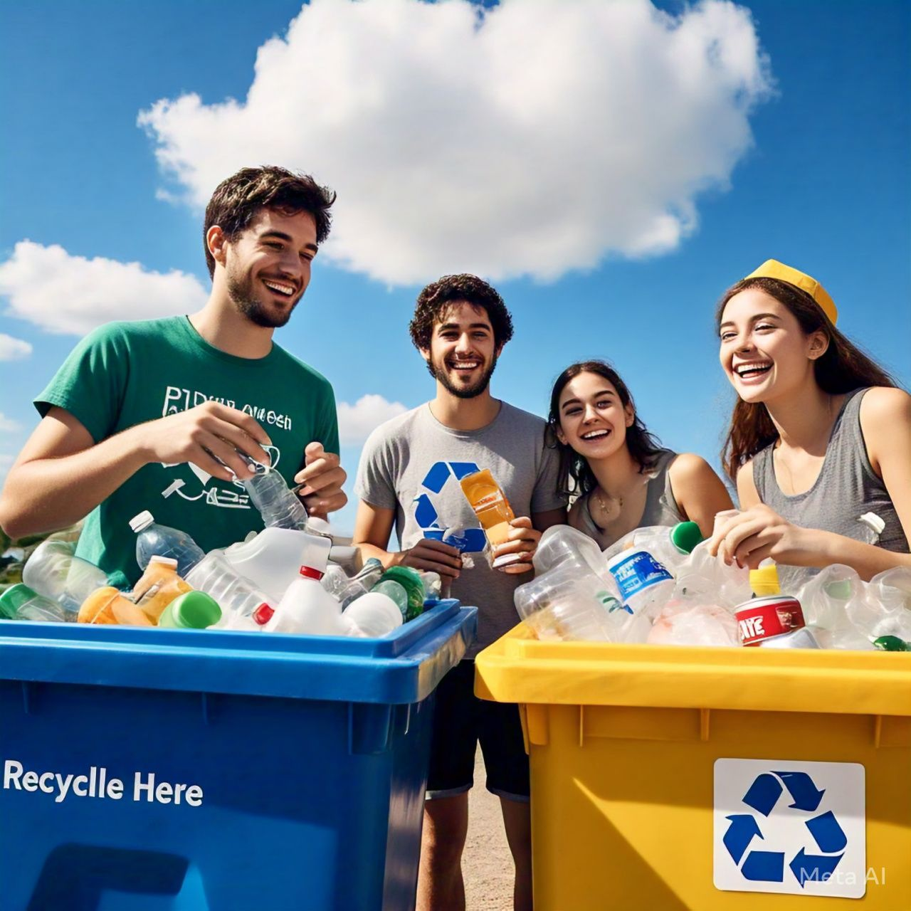
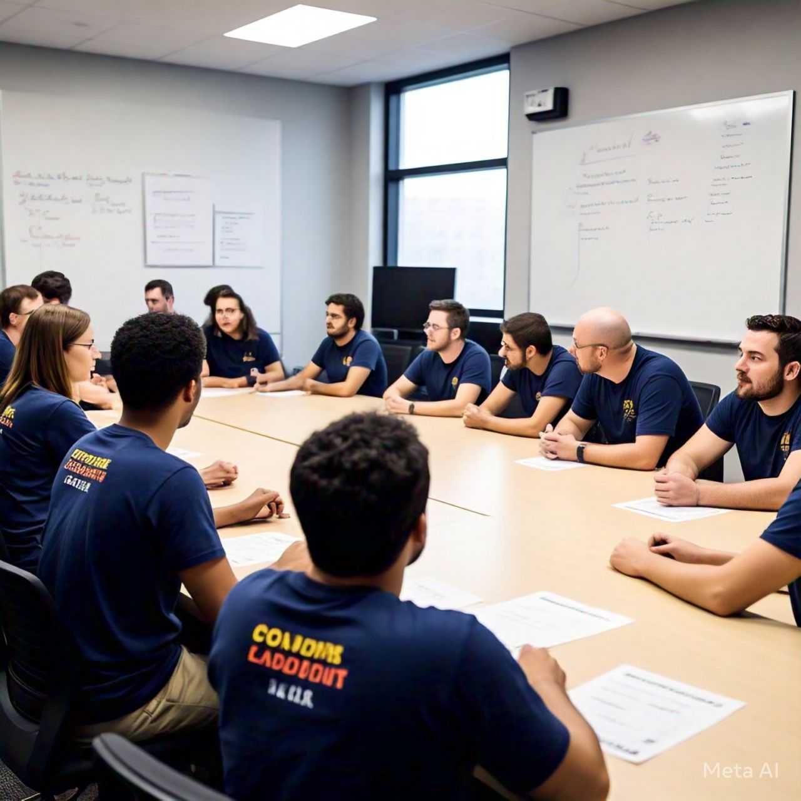
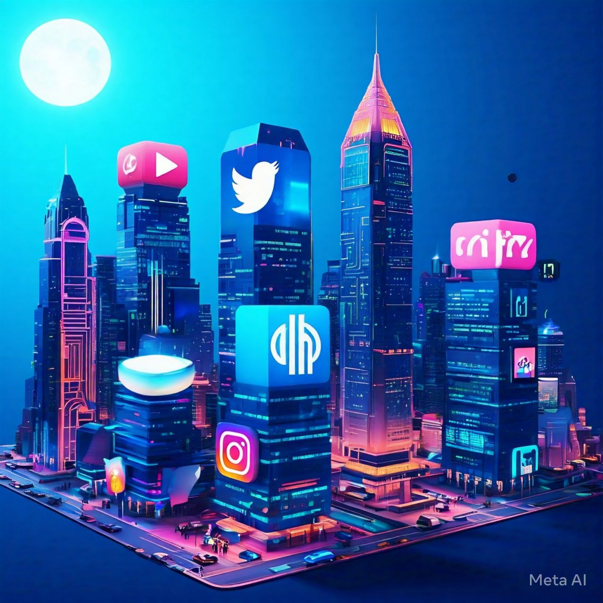

División del Trabajo
Una buena dirección comienza con la distribución clara de responsabilidades. En este proyecto, los líderes comunitarios coordinan esfuerzos, motivan a la comunidad y construyen alianzas estratégicas. Los voluntarios participan en actividades prácticas como la limpieza y reciclaje, mientras que los expertos en medio ambiente desarrollan planes de acción y evalúan el impacto ambiental.

Importancia de los Colaboradores
Los colaboradores son fundamentales para el éxito del proyecto. Aportan habilidades y perspectivas únicas que enriquecen las estrategias. Dividir las responsabilidades mejora la productividad y fomenta la innovación. Sin colaboradores, la carga de trabajo sería insostenible, afectando la calidad y la creatividad.

Uso de Tecnología
Redes sociales como Facebook son herramientas poderosas para reclutar colaboradores y mantener a la comunidad informada. Estas plataformas permiten una comunicación efectiva, fortalecen la organización y crean un sentido de comunidad, esenciales para el éxito del proyecto.